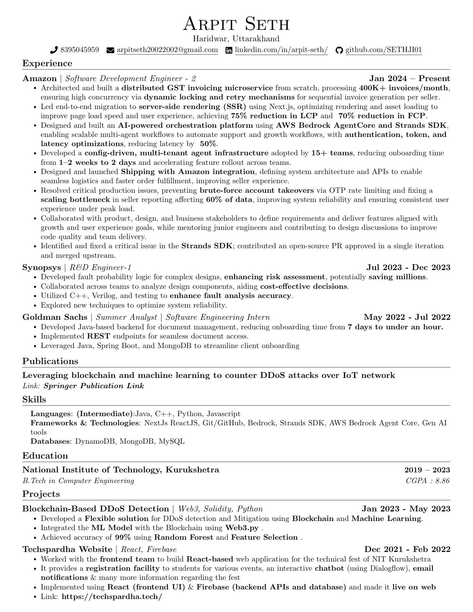

SDE-2 @ Amazon · Distributed Systems · Backend · AI Systems
Backend & agentic AI platform engineer for high-scale product systems.
I build scalable backend services, agentic systems, and seller-facing platforms with measurable improvements in scale, latency, onboarding, and reliability.
Java
Distributed systems
Agentic systems
MCP
RAG
Multi-agent orchestration
Bedrock AgentCore
DynamoDB
400K+
invoices/month
75%
LCP reduction
15+
tenants on agent platform
- Built GST invoicing microservice from scratch with high-concurrency locking and retry flows.
- Reduced seller page LCP by 75% and FCP by 70% through SSR migration.
- Built config-driven support agent platform adopted by 15+ tenants.

Recruiter Snapshot
Impact that maps directly to SDE-2 expectations.
Experience
Production ownership across scale, performance, and platform work.
Jan 2024 - Present
Amazon · Software Development Engineer 2
- Architected distributed GST invoicing service processing 400K+ invoices/month.
- Built a multi-agent orchestrator that coordinates 8-10 specialized agents and standardizes agent I/O contracts for frontend consumption.
- Created a config-driven RAG support agent where teams plug in MCP tools and knowledge bases to launch tenant-ready support agents.
- Created asynchronous seller intelligence workflows that periodically analyze ads, listings, sales, and storefront data to generate actionable growth recommendations.
- Delivered SSR migration with 75% LCP and 70% FCP improvement for seller-facing pages.
- Improved Ship With Amazon event handling, seller-facing errors, DevOps automation, and production debuggability.
- Resolved OTP brute-force risk, STS credential expiry issues, and reporting gaps affecting business-critical data.
Java
AWS Bedrock
Bedrock AgentCore
Agentic Systems
Multi-Agent Orchestration
RAG
MCP
Tool-Calling Agents
Next.js
DynamoDB
Distributed Systems
Jul 2023 - Dec 2023
Synopsys · R&D Engineer 1
- Developed fault probability logic for complex designs to improve risk assessment.
- Worked across design analysis and testing workflows to improve fault analysis accuracy.
C++
Verilog
Testing
May 2022 - Jul 2022
Goldman Sachs · Software Engineering Intern
- Built Java backend services for document management and client onboarding.
- Reduced onboarding time from 7 days to under an hour with REST APIs and MongoDB.
Java
Spring Boot
MongoDB
Skills
Core stack and working strengths.
Backend
Java, Python, C++, REST APIs, distributed systems, locking, retries, production debugging.
AI & Cloud
Agentic AI, multi-agent orchestration, RAG, MCP, tool-calling agents, knowledge bases, AWS Bedrock, Bedrock AgentCore, Strands SDK, GenAI workflows, authentication and latency optimization.
Frontend & Data
Next.js, React, SSR, DynamoDB, MongoDB, MySQL, Git/GitHub.
Projects & Publication
Selected proof of range.
Open Source · Strands Agents
Merged PR
Enhanced retrieve tool with configurable metadata output
Contributed to the public Strands Agents tools repository by adding optional metadata output, environment-variable defaults, backward-compatible formatting, tests, documentation, and examples.
View merged PR
Springer · Multimedia Tools and Applications
Research + Project
Leveraging blockchain and machine learning to counter DDoS attacks over IoT network
Research-backed project for DDoS detection and mitigation using blockchain and machine learning. Integrated Random Forest, feature selection, and Web3.py; the published work reports 99.34% accuracy.
View journal article
Dec 2021 - Feb 2022
React · Firebase
Techspardha Website
React-based technical fest platform with student registration, chatbot support, email notifications, Firebase backend APIs, and live deployment.
Visit projectContact